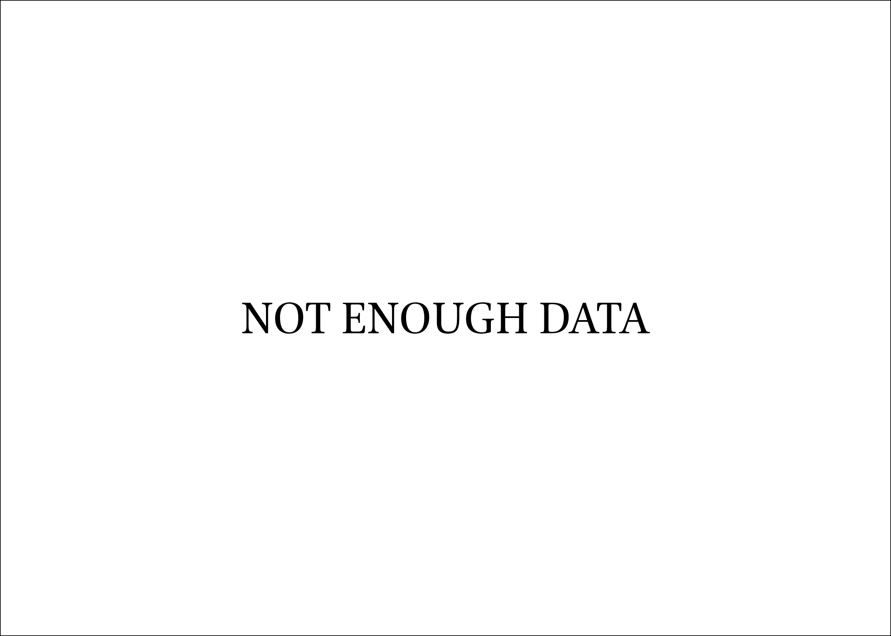

0902Sakhawi.DawLamic.ITO20230111-ara1.EIS1600.588561562377
Biography ID: 588561562377
350
عمر بن عمر بن عبد الرحمن بن يوسف السراج الأنصاري الدموشي الشافعي البسطامي . تفقه بالولي الملوي وبه تسلك ، وكذا أخذ عن ابن الملقن شرحه للحاوي وقرأ على العز بن جماعة ألفية العراقي وعلى الولي العراقي تلخيص المفتاح وعد هذا في النوادر وقيل أنه لو عكس أجاد ، وذكر أنه سمع البخاري على أبي البقاء السبكي بل سمع على التنوخي جزء أبي الجهم وغيره ، وكان رأس صوفية الشافعية بخانقاه شيخو متقدما في الفرائض والحساب مشاركا في فنون وألف كتابا في اللغة التركية على قواعد العربية ، واختص بالظاهر جقمق قبل سلطنته وجرد عليه القرآن ، بل أخذ عنه الفضلاء كالجلال القمصي . مات في شوال سنة تسع وعشرين وقد ناهز التسعين رحمه الله ووهم من عمله حنفيا كابن فهد .
